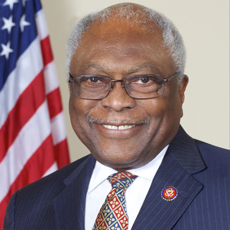

<div class="container">
	<div class="row">
        <div id="speaker-detail" class="col-lg-10 col-lg-offset-1">
            <div class="row">
            	<button title="Close (Esc)" type="button" class="mfp-close">×</button>
                
                <div class="col-md-5 col-lg-5 no-padding">
                    
                </div>
                    
                <div class="col-md-7 col-lg-7">
                    <h2>Jim <span>Clyburn</span></h2>
                    <p class="lead">U.S. Representative</p>
                    <!--
                    <ul class="social list-inline list-unstyled">
                    	<li><a href=""><i class="fa fa-2x fa-facebook-square"></i></a></li>
                        <li><a href=""><i class="fa fa-2x fa-twitter-square"></i></a></li>
                        <li><a href=""><i class="fa fa-2x fa-google-plus-square"></i></a></li>
                        <li><a href=""><i class="fa fa-2x fa-linkedin-square"></i></a></li>
                    </ul>
                    -->
                    
                    <div id="content">
                    	<p>James E. “Jim” Clyburn was born and raised in Sumter, graduated high school in Camden; and College in Orangeburg; and began his professional career as a public school teacher in Charleston. He is the eldest son of a fundamentalist minister and a cosmetologist. Jim is married to the former Emily England of Moncks Corner, and they are the parents of three daughters, two granddaughters and two grandsons. They are 1961 graduates of South Carolina State College (University), and have always lived in what is now South Carolina’s Sixth Congressional District.<p>

<p>Congressman Clyburn began teaching English and Social Studies at Simonton Middle School and World History at C.A. Brown High School in 1962. After three years in the classroom he became an employment counselor, directed two youth and community development programs and served as Executive Director of the South Carolina Commission for Farm Workers.</p>

<p>After losing a close contest for the South Carolina House of Representatives in 1970, Jim caught the eye of Governor John Carl West, who made him the first minority advisor to a South Carolina governor. Under Governor West, Jim demonstrated his strong leadership skills and in 1974 Governor West appointed him South Carolina Human Affairs Commissioner.</p>

<p>Jim retired from state government in 1992 to run for Congress. His relationships throughout the district and his proven leadership ability enabled him to garner over 55% percent of the vote in a five-candidate contest. He won the General Election, and became South Carolina’s first African American Congressman in nearly 100 years.</p>

<p>In Congress, Jim has progressively climbed the leadership ladder. He was elected President of his freshman class for the 2nd Session of the 103rd Congress, and was unanimously elected Chair of the Congressional Black Caucus in 1999. In 2002, he won a three-candidate race to become Vice Chair of the House Democratic Caucus, and was unanimously elected Caucus Chair in 2006 and became House Majority Whip in 2007.</p>

<p>Jim is currently House Majority Whip, the number three position in the House Democratic Caucus.  He has a seat at the table when key decisions are being made in Washington and he works everyday to keep his promise to the people of South Carolina to put, “Service above self and principles above politics.”.</p>
                    </div>
                </div>
            
            </div>
        </div>
    </div>
</div>